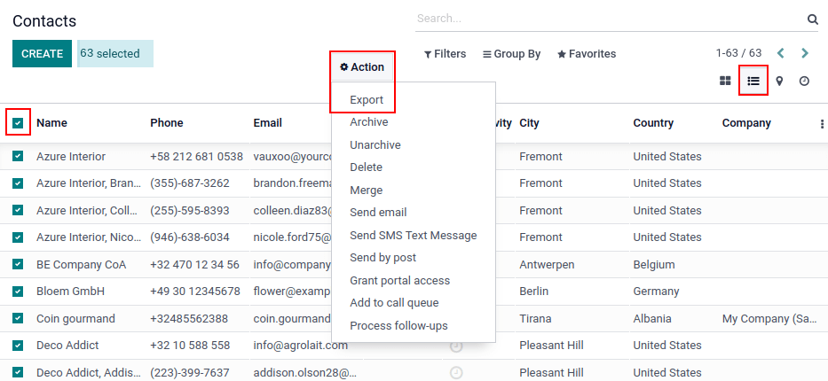
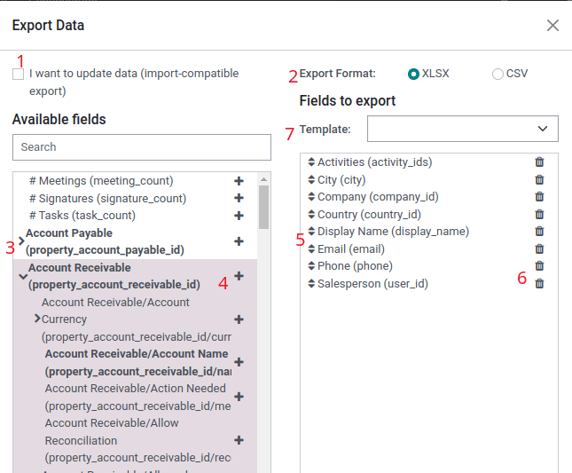
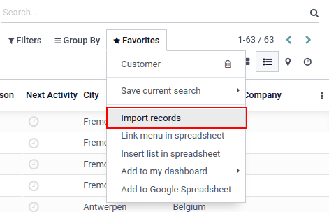

Exportar e importar datos¶
En Odoo, a veces es necesario exportar o importar datos para ejecutar informes, o para modificar datos. Este documento cubre la exportación e importación de datos dentro y fuera de Odoo.
Importante
Es posible que los usuarios obtengan un error de “tiempo de espera agotado”, o que no se procese un registro debido al tamaño. Esto puede ocurrir con exportaciones grandes, o en casos donde el archivo es muy grande. Para evitar esta limitación en el tamaño de los archivos, es necesario procesar exportaciones o importaciones en lotes más pequeños.
Exportar datos desde Odoo¶
Al trabajar en une base de datos a veces es necesario exportar datos a un archivo en específico. Esto puede mejorar las actividades de reportes, aunque Odoo ya brinda una herramienta de reportes precisa y fácil de usar en cada aplicación disponible.
Con Odoo, los valores se pueden exportar desde cualquier campo en cualquier registro. Para hacerlo, active la vista de lista (icono de ☰ (tres líneas horizontales)) en los artículos que quiere exportar y después seleccione los registros que se deben exportar. Para seleccionar un registro, marque la casilla de verificación a un lado del registro correspondiente. Finalmente, haga clic en el botón ⚙️ Acción y luego en Exportar.
Al hacer clic en Exportar, aparecerá una ventana emergente para Exportar datos con varias opciones para la exportación de datos:
Con la opción de Deseo actualizar datos (exportación compatible con importación) habilitada, el sistema solo muestra los campos que se pueden importar. Esto es muy útil en caso de que quiera actualizar registros existentes. Funciona como una especie de filtro, si no selecciona la casilla tiene más opciones de campo porque muestra todos los campos, no solo los que se pueden importar.
Al exportar puede elegir dos formatos:
.csvy.xls. Con.csv, los elementos se separan con una coma, mientras que.xlsalmacena información sobre todas las hojas de trabajo en un archivo e incluye tanto el contenido como el formato.Estos son los elementos que se pueden exportar. Utilice el icono > (flecha derecha) para mostrar más opciones de subcampos. Utilice la barra Buscar para encontrar campos específicos. Para utilizar la opción Buscar de forma más eficaz, haga clic en todas las > (flechas hacia la derecha) para mostrar todos los campos.
El icono + (signo de más) sirve para agregar campos a la lista Campos por exportar.
El icono ↕️ (flecha arriba-abajo) a la izquierda de los campos seleccionados se puede utilizar para mover los campos arriba y abajo y así cambiar el orden en que se muestran en el archivo exportado. Arrastre y suelte utilizando el icono ↕️ (flecha arriba-abajo).
El icono 🗑️ (papelera) se usa para quitar campos. Haga clic en el icono 🗑️ (papelera) para quitar campos.
Para los reportes recurrentes, es útil guardar preconfiguraciones de exportación. Seleccione todos los campos necesarios y haga clic en el menú desplegable de plantillas. Una vez allí, haga clic en Nueva plantilla, y nombre a la exportación que acaba de crear. La próxima vez que sea necesario exportar la misma lista, seleccione en el menú desplegable la plantilla relacionada que se guardó anteriormente.
Truco
Es útil saber el identificador externo del campo. Por ejemplo, Empresa relacionada en la interfaz de exportación del usuario es igual que el identificador externo parent_id. Esto es útil porque así los únicos datos exportados serán los que se deban modificar y volver a importar.
Importar datos a Odoo¶
Importar datos a Odoo es muy útil sobre todo durante la implementación, o en momentos cuando los datos necesitan actualizarse en lote. La documentación siguiente habla sobre cómo importar datos a una base de datos de Odoo.
Advertencia
Las importaciones son permanentes y no se pueden deshacer. Sin embargo, es posible usar filtros (Creado el o Última modificación) para identificar registros que se cambiaron o se crearon con la importación.
Truco
Al activar el modo de desarrollador se cambian los ajustes de importación visibles en el menú de la izquierda. Al hacerlo, aparecerá el menú . En este menú avanzado se incluyen dos opciones: Registrar historial durante la importación y Permitir emparejamiento con subcampos.

Si el modelo utiliza openchatter, la opción Registrar historial durante la importación configura las suscripciones y envía notificaciones durante la importación, pero hace que la importación sea más lenta.
Si selecciona la opción Permitir emparejamiento con subcampos, entonces todos los subcampos dentro de un campo se usan para coincidir con el Campo Odoo al realizar la importación.
Empezar¶
Los datos pueden ser importados en cualquier objeto empresarial de Odoo usando formatos Excel (.xlsx) o CSV (.csv). Esto incluye: contactos, productos, extractos bancarios, asientos y pedidos.
Abra la vista del objeto a la que desea importar los datos y haga clic en .
Después de hacer clic en Importar registros, Odoo revela una página separada con plantillas que pueden ser descargadas y rellenadas con los datos propios de la empresa. Estas plantillas se pueden importar en un solo clic, ya que la asignación de datos ya está hecha. Para descargar una plantilla haga clic en Importar Plantilla para Clientes en el centro de la página.
Importante
Al importar un archivo CSV, Odoo proporciona opciones de formato. Estas opciones no aparecen al importar el tipo de archivo Excel propietario (.xls, .xlsx).

Haga los ajustes necesarios a las opciones de formato y asegúrese de que todas las columnas en el campo de Odoo y Columna de archivo no tengan errores. Finalmente, haga clic en Importar para importar los datos.
Adaptar una plantilla¶
En la herramienta de importación se proporcionan las plantillas para importar los datos más comunes (contactos, productos, estados de cuenta bancarios, etc.). Puede abrirlas con cualquier software de hojas de cálculo (Microsoft Office, OpenOffice, Google Drive, entre otros).
Una vez que se descargue la plantilla, siga los siguientes pasos:
Agregue, elimine y organice columnas para que se adapten mejor a la estructura de su información.
Se le recomienda no quitar la columna ID externo (ID) (vea por qué en la siguiente sección).
Configure un ID único para cada registro, solo tiene que arrastrar hacia abajo la secuencia de ID en la columna ID externo (ID).

Nota
Al agregar una nueva columna, es posible que Odoo no pueda mapearla automáticamente si la etiqueta no corresponde a ningún campo en Odoo pero puede mapear las nuevas columnas de forma manual cuando pruebe la importación. Busque el campo correspondiente en el menú desplegable..

Después, use la etiqueta de este campo para asegurar que las importaciones futuras serán exitosas.
Truco
Otra forma útil de averiguar los nombres de columna adecuados para importar es exportar un archivo de muestra utilizando los campos que se deben importar. De esta forma, si no existe una plantilla de importación de muestra, los nombres serán correctos.
Importar desde otra aplicación¶
El ID externo (ID) es un identificador único para cada línea de artículo y puede usar el de su software anterior para facilitar la transición a Odoo.
No es obligatorio establecer un ID al importar, pero es de gran ayuda en muchos casos:
Actualizar importaciones: importar el mismo archivo varias veces sin crear duplicados.
Para recrear relaciones entre diferentes registros, el identificador único de la aplicación original debe usarse para mapearlo a la columna ID Externo (ID) en Odoo.
Cuando se importe otro registro vinculado al primero, utilice XXX/ID (XXX/ID externo) para el identificador único original. Este registro también se puede encontrar utilizando su nombre.
Advertencia
Es importante mencionar que habrá conflictos si dos o más registros tienen el mismo nombre.
El ID externo (ID) se utilizará para actualizar la importación original si necesita volver a importar los datos modificados después, así que es una buena práctica especificarlo siempre que sea posible.
Campo faltante para mapear una columna¶
Odoo heurísticamente intenta encontrar el tipo de campo para cada columna dentro del archivo importado, basado en las primeras diez líneas de los archivos.
Por ejemplo, si hay una columna que sólo contiene números, sólo se presentan como opciones los campos de tipo entero.
Aunque en la mayoría de los casos este comportamiento puede ser favorable, también es posible que ocurra un error o que la columna se asigne a un campo que no está propuesto de forma predeterminada.
SI esto pasa, marque la opción Mostrar campos de campos relacionados (avanzado), después una lista completa de campos estará disponible para cada columna.
Cambiar el formato de importación de datos¶
Nota
Odoo puede detectar de forma automática si una columna es una fecha e intentará deducir el formato de fecha a partir de un conjunto de formatos de fecha utilizados con mayor frecuencia. Aunque este proceso puede funcionar para varios formatos de fecha, algunos otros no se reconocerán. Esto puede causar confusión debido a las inversiones de día y mes, es difícil deducir qué parte de un formato de fecha es el día y qué parte es el mes en una fecha, como en 01-03-2016.
Al importar un archivo CSV file, Odoo le da opciones de Formato.
Para ver qué formato de fecha encontró Odoo en el archivo, puede revisar el formato de fecha que aparece al hacer clic en las opciones en el selector de archivos. Si este formato no es correcto, puede cambiarlo usando la ISO 8601 para definir el formato.
Importante
ISO 8601 es una norma internacional que cubre el intercambio mundial, junto con la comunicación de datos relacionados con la fecha y la hora. Por ejemplo, el formato de fecha debe ser «AAAA-MM-DD». Así, en el caso del 24 de julio de 1981, debe escribirse «1981-07-24».
Truco
Cuando importe archivos Excel (.xls, .xlsx), considere usar celdas de fecha para almacenar fechas. Esto mantiene los formatos de fecha locales para su visualización, independientemente de cómo se formatea la fecha en Odoo. Cuando importe un archivo CSV, use la sección Formato de Odoo para seleccionar las columnas de formato de fecha a importar.
Importar números con signos de divisa¶
Odoo es compatible con los números entre paréntesis para representar los signos negativos, así como los números con los signos de divisa. Odoo también detecta de forma automática qué separador de miles o decimales utiliza. Si usa un símbolo de divisa que Odoo no conoce, es posible que no se reconozca como un número y se bloqueará.
Nota
Al importar un archivo CSV, aparece el menú Formato en la columna de la izquierda. En estas opciones, se puede cambiar el Separador de miles.
Ejemplos de números compatibles (se usa treinta y dos mil como ejemplo):
32.000,00
32000,00
32,000.00
-32000.00
(32000.00)
$ 32,000.00
(32000.00 €)
Ejemplos que no son compatibles:
ABC 32,000.00
$ (32,000.00)
Importante
Un () (paréntesis) alrededor del número indica que el número es un valor negativo. El símbolo de moneda debe colocarse dentro del paréntesis para que Odoo lo reconozca como un valor de moneda negativo.
Tabla de previsualización de la importación no se muestra correctamente¶
De forma predeterminada, la vista previa de importación está configurada con comas como separadores de campo y con comillas como delimitadores de texto. Si el archivo CSV no cuenta con estos ajustes, entonces modifique las opciones de formato que aparecen en la barra de archivo Importar CSV (Valores separados por comas) después de seleccionar el archivo CSV.
Importante
Si el archivo CSV tiene una tabulación como separador, Odoo no detecta las separaciones. Las opciones de formato de archivo necesitan modificarse en la aplicación de hoja de cálculo. Vea la siguiente sección Cambiar formato de archivo CSV.
Cambiar el formato del archivo CSV en una aplicación de hoja de cálculo¶
Al editar y guardar archivos CSV en aplicaciones de hojas de cálculo, se aplica la configuración regional del ordenador para el separador y el delimitador. Odoo sugiere usar OpenOffice o LibreOffice, ya que ambas aplicaciones permiten modificar las tres opciones (desde la aplicación LibreOffice, ir al cuadro de diálogo ).
Microsoft Excel solo puede modificar la codificación al guardar (en el ).
Diferencias entre el ID de la base de datos y el ID externo¶
Algunos campos definen una relación con otro objeto. Por ejemplo, el país de un contacto es un enlace a un registro del objeto “País”. Cuando se importan estos campos, Odoo tendrá que volver a crear enlaces entre los diferentes registros. Para ayudarle a importar dichos campos, Odoo proporciona tres mecanismos.
Importante
Solo un mecanismo debe usarse por campo importado.
Por ejemplo, para referenciar el país de un contacto, Odoo propone tres campos distintos para importar:
País: el nombre o código del país.
País/ID de la base de datos: el ID único de Odoo para un registro, definido por la columna ID PostgreSQL.
País/ID externo: el ID de este registro al que se hace referencia en otra aplicación (o el archivo
.XMLque lo importó).
Para Bélgica, por ejemplo, use una de estas tres maneras de importar:
País:
BélgicaPaís/ID de la base de datos:
21País/ID externo:
base.be
Según las necesidades de la empresa, utilice una de estas 3 formas de referenciar registros en relaciones. Deberá usar una u otra, según sea necesario, aquí tiene un ejemplo:
Usar país: esta es la forma más sencilla cuando los datos provienen de archivos CSV que se crearon de forma manual.
Usar país/ID de la base de datos: es poco probable que use esta notación, ya que en su mayoría la utilizan los desarrolladores. Su principal ventaja es que nunca tiene conflictos (puede tener varios registros con el mismo nombre, pero solo tendrán un ID de base de datos único).
Usar país/ID externo: utilice el ID externo cuando importa datos desde una aplicación de terceros.
Cuando se utilicen ID externos, importe archivos CSV con la columna ID externos (ID) que define el ID externo de cada registro que se importa. A continuación, se puede hacer referencia a ese registro con columnas como Campo/ID externo. Los dos archivos CSV siguientes ofrecen un ejemplo de productos y sus categorías.
Importar campos de relación¶
Un objeto de Odoo siempre se relaciona con muchos otros, por ejemplo, un producto está vinculado a categorías de productos, atributos, proveedores y más. Para importar esas relaciones, primero debe importar los registros del objeto relacionado desde su propio menú de lista.
Esto puede hacerse mediante el nombre del registro relacionado o por su ID, este último se espera cuando dos registros tienen el mismo nombre. En tal caso, agregue /ID al final del título de la columna (por ejemplo, para atributos de producto: Atributos de producto / Atributo / ID).
Opciones para varias coincidencias en campos¶
Si, por ejemplo, hay dos categorías de producto con el nombre secundario Se puede vender (por ejemplo, Productos varios/Se puede vender y Otros productos/Se puede vender), su validación se detiene, pero aún puede importar sus datos. Le recomendamos que no importe los datos, ya que todos se vincularán a la primera categoría Se puede vender perteneciente a la categoría Lista de producto (Productos varios/Se puede vender). Le sugerimos que modifique uno de los valores duplicados o la jerarquía de la categoría del producto.
Sin embargo, si la empresa no desea cambiar la configuración de las cateogrías de los producto, le recomendamos usar el ID externo para el campo “Categoría”.
Importar campos de relación many2many¶
Las etiquetas se deben separar con coma y sin espacios. Por ejemplo, si un cliente debe vincularse a las etiquetas Fabricante y Vendedor minorista entonces debe poner las etiquetas “Fabricante,Vendedor minorista” en la misma columna del archivo CSV.
Importar relaciones one2many¶
Si una empresa quiere importar una orden de venta con varias líneas de orden, se debe reservar en el archivo CSV para cada línea de la orden. La primera línea de la orden se importa en la misma hilera que la información relativa a la orden. Las líneas adicionales necesitan una hilera adicional que no tenga ninguna información en los campos relacionados a esa orden.
Como ejemplo, aquí tiene un archivo CSV de algunas cotizaciones que se pueden importar según los datos de demostración:
El siguiente archivo CSV muestra cómo importar órdenes de compra con sus respectivas líneas de orden de compra:
El siguiente archivo CSV muestra cómo importar clientes y sus respectivos contactos:
Importar registros varias veces¶
Si un archivo importado contiene la columna ID externo o la columna ID de la base de datos, los registros que ya se importaron se modificarán en lugar de que se creen desde cero. Esto es uy util ya que permite que los usuarios importen el mismo archivo CSV varias veces si se hicieron cambios durante dos importaciones.
Odoo se asegura de crear o modificar cada registro, dependiendo de si es nuevo o no.
Esta función permite que la empresa use la herramienta de importación o exportación para modificar un lote de registros en la aplicación Hoja de cálculo.
Valor no dado para un campo en específico¶
Si no establece todos los campos en el archivo CVS, Odoo asigna el valor predetermminado para cada campo no definido. Sin embargo, si un campo está configurado con valores vacíos en el archivo CSV, Odoo configura el valor vacío en el campo, en lugar de asignar un valor predeterminado.
Exportar o importar diferentes tablas de una aplicación SQL a Odoo¶
Si necesita importar datos de diferentes tablas, tendrá que volver a crear relaciones entre registros que pertenecen a diferentes tablas. Por ejemplo, si importa empresas e individuos, deberá volver a crear el vinculo entre cada individuo y la empresa en la que trabajan.
Para gestionar las relaciones entre tablas, puede utilizar las funciones de ID externo de Odoo. El ID externo de un registro es el identificador único de este registro en otra aplicación. Este debe ser único en todos los registros de todos los objetos, así que es una buena práctica anteponer este ID externo al nombre de la aplicación o tabla, (como “empresa_1”, “persona_1” en lugar de “1”).
Como ejemplo, supongamos que hay una base de datos SQL con dos tablas que se necesitan importar: empresas y personas. Cada persona pertenece a una empresa, entonces se debe volver a crear el vínculo entre una persona y la empresa para la que trabajan.
Pruebe este ejemplo con un ejemplo de una base de datos PostgreSQL.
Primero, exporte todas las empresas y sus ID externos. Escriba el siguiente comando en PSQL:
> copy (select 'company_'||id as "External ID",company_name as "Name",'True' as "Is a Company" from companies) TO '/tmp/company.csv' with CSV HEADER;
Este comando SQL crea el siguiente archivo CSV:
External ID,Name,Is a Company
company_1,Bigees,True
company_2,Organi,True
company_3,Boum,True
Usaremos el siguiente comando SQL en PSWL para crear el archivo CSV para personas vinculadas a empresas:
> copy (select 'person_'||id as "External ID",person_name as "Name",'False' as "Is a Company",'company_'||company_id as "Related Company/External ID" from persons) TO '/tmp/person.csv' with CSV
Produce el siguiente archivo CSV:
External ID,Name,Is a Company,Related Company/External ID
person_1,Fabien,False,company_1
person_2,Laurence,False,company_1
person_3,Eric,False,company_2
person_4,Ramsy,False,company_3
En el archivo anterior, Fabien y Laurence trabajan para la empresa Bigees (empresa_1) y Eric trabaja para la empresa Organi. La relación entre personas y empresas se realiza mediante el ID externo de las empresas. Se usa el nombre de la tabla como prefijo del ID externo para evitar un conflicto de ID entre personas y empresas (persona_1 y empresa_1 que compartían el mismo ID 1 en la base de datos original).
Los dos archivos que se generaron están listos para importarse a Odoo sin ninguna modificación. Tras importar estos dos archivos CSV, tendrá cuatro contactos y tres empresas, los dos primeros contactos están vinculados a la primera empresa. Primero debe importar las empresas y luego las personas.